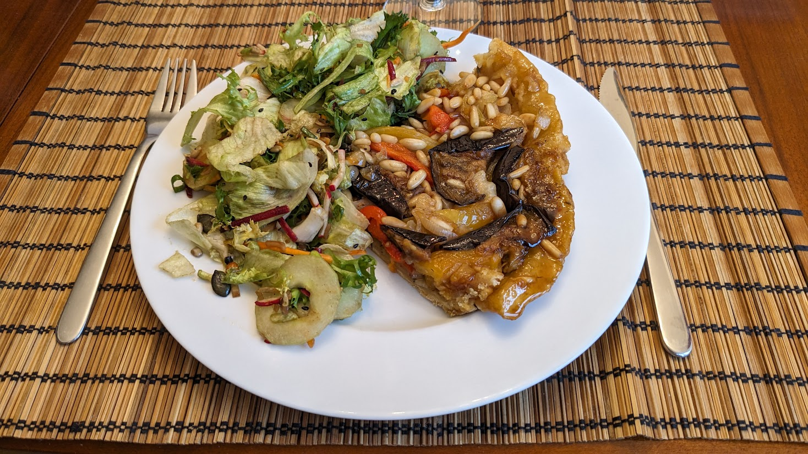

Tarte Tatin poivrons-aubergines

Pour 3 personnes :
- Une pâte feuilletée ou brisée
- Deux poivrons de couleurs différentes
- Une grosse aubergine
- Deux oignons
- Une gousse d'ail
- 75g de pignons de pin
- Une noix de beurre
- Une cuillère à soupe de cassonade
- (Facultatif) Un peu de thym
- Sel, poivre, huile d'olive
- Faire préchauffer un four à 180°C. Laver les poivrons et les mettre entiers dans le four.
- Laver l'aubergine et la couper en lamelles d'un centimère d'épaisseur. Faire revenir les lamelles d'aubergines dans une poêle avec de l'huile d'olive jusqu'à ce qu'elles soient dorées des deux côtés.
- Quant les poivrons commencent à se friper et se colorer, les sortir du four. Mettre les pignons de pin à cuire dans la poêle jusqu'à ce qu'ils se colorent.
- Peler les poivrons, les épépiner et les couper en demi-lanières.
- Beurrer un moule à tarte à bords assez hauts. Mettre un peu de cassonade sur le fond, puis y disposer poivrons, aubergines et pignons de pins. Saler, poivrer, ajouter un peu de thym, et dérouler une pâte feuilletée sur le tout en repliant les bords.
- Enfourner pour une bonne vingtaine de minutes, déguster chaud au tiède avec une salade.